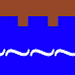
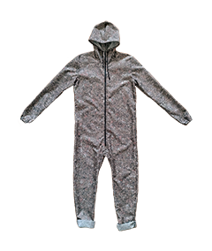

-
MEET ME ON THE DEEP NET ↗ 
A tiny, browser-based game about crossing an ocean to meet a stranger. It explores intimacy, trust, and the rituals of establishing connection while being anonymous.
The game play is inspired by how secure rendezvous points are established in the Tor network to allow websites to be visited and hosted anonymously.
After finishing the game, players are invited to visit a real website using the Tor network, where they'll be able to contribute to a collaborative digital landscape.
-
MAKE YOUR COMPUTER A HOME THAT YOUR FRIENDS CAN VISIT ↗
A meditation on treating websites like a collection of files that you can invite your friends over to visit. Visit my folder party website, or use the static site generator I built to easily create your own website from a folder on your computer.
Visit ↗ | Host your own folder party ↗
-
SELF-HOSTING WEBSITES WITH TOR ↗
A work-in-progress guide to hosting your own websites using open-source & privacy-centric tools. The technical introduction and walkthrough is part of a series of workshops I teach on Tor for creative communities.
Read ↗ | Download the setup code ↗
-
STUDIES IN DISAPPEARING ↗ 
A collection of wearable metaphors, sketches, and software tools for disappearing the body in public space. It includes a wardrobe of seasonal camouflage suits based on my neighborhood and software for generating your own camouflage patterns based on photographs.
View ↗ | Create your own camouflage patterns ↗
-
HTML SKETCHBOOK ↗
A digital sketchpad filled with drawings and prototypes for projects made using HTML, CSS, and JavaScript
Flip through ↗ | View source code ↗
*This website is always under construction & unevenly outdated. Pls excuse the mess.